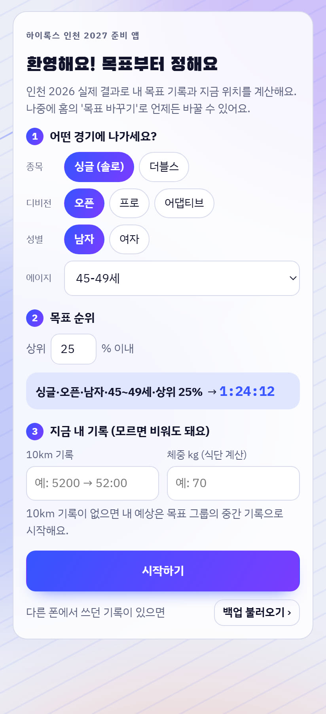
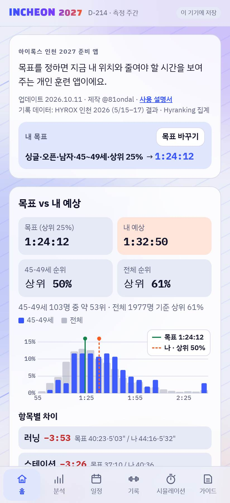
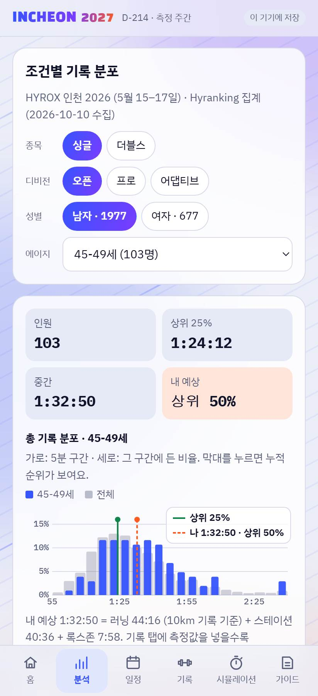
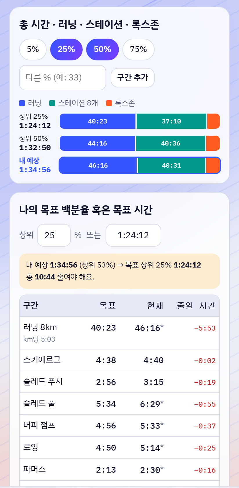
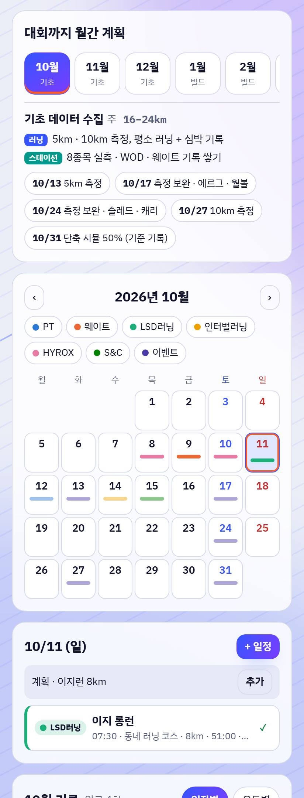
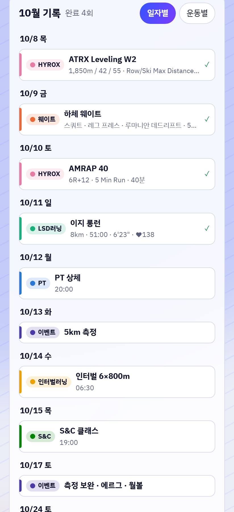
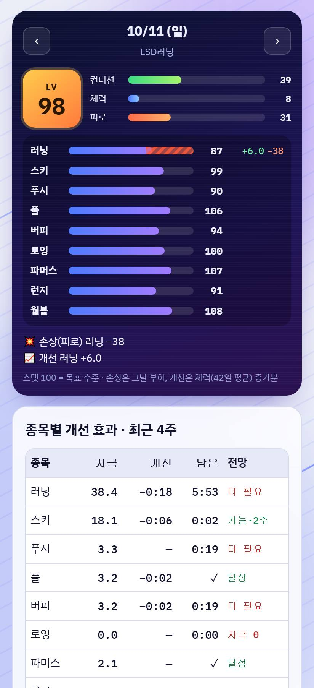
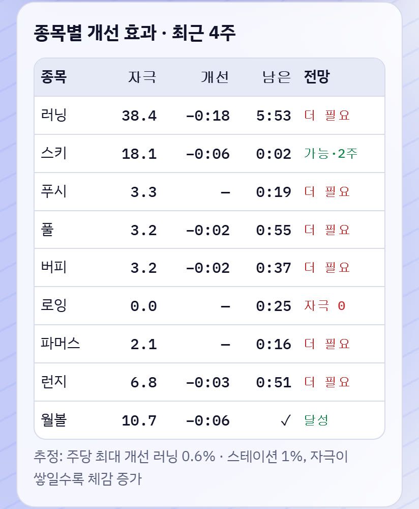
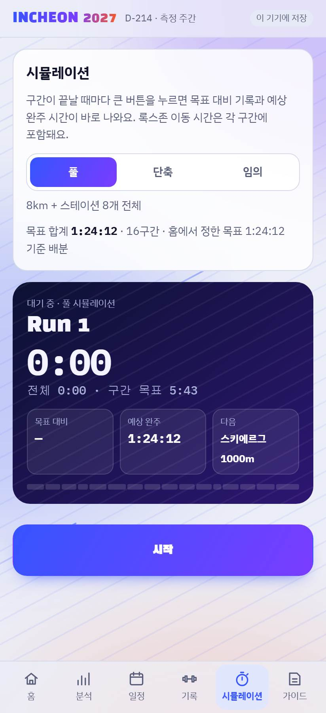
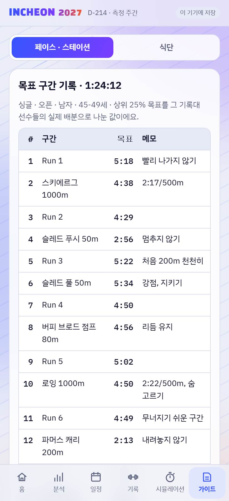

하이록스훈련
사용 설명서
목표를 정하면 지금 내 위치와 줄여야 할 시간을 보여 주는 개인 훈련 앱 · 업데이트 2026.10.11 · 제작 @81ondal
이 앱으로 할 수 있는 것
- 내 디비전 · 나이대에서 목표 순위의 기록과 지금 예상 순위 보기
- 목표 기록을 러닝 · 스테이션 8개 · 록스존에 얼마씩 배정할지 보기
- 달력에 PT · 웨이트 · 러닝 · HYROX 일정을 넣고, 끝나면 기록 카드와 사진 남기기
- 운동이 하이록스 종목에 준 손상(피로)과 개선을 게임 스탯처럼 보기
- 대회처럼 구간을 나눠 재는 시뮬레이션 타이머, 식단 기준
기록 데이터 기준: HYROX 인천 2026 (2026.5.15–17) 실제 결과. 해마다 참가자 수준이 오르니 목표는 조금 여유 있게 잡는 게 좋아요.
1. 설치하기
앱스토어 없이 링크로 설치해요. 설치하면 홈 화면 아이콘으로 열리고, 주소창 없이 전체 화면으로 보여요.
| 폰 | 방법 |
|---|
| 안드로이드 | 크롬으로 k1pale92.github.io/hyrox 열기 → 오른쪽 위 ⋮ → 앱 설치 (또는 '홈 화면에 추가') |
| 아이폰 | 사파리로 같은 주소 열기 → 아래 공유 버튼 → 홈 화면에 추가 |
업데이트 받기: 앱을 완전히 닫았다가(최근 앱 목록에서 밀기) 다시 열면 돼요. 그래도 그대로면 한 번 더 닫았다 여세요.
2. 처음 시작 — 목표 정하기

- 어떤 경기에 나가세요? 종목(싱글 · 더블스), 디비전(오픈 · 프로 · 어댑티브), 성별, 에이지. 더블스 에이지는 두 사람 평균 나이예요.
- 목표 순위: 상위 몇 %에 들고 싶은지. 바로 아래에 목표 기록이 계산돼요.
- 지금 내 기록 (선택): 10km 기록과 체중. 10km가 없으면 같은 그룹 중간 기록으로 시작해요.
- 시작하기. 나중에 홈의 목표 바꾸기로 언제든 바꿀 수 있어요.
3. 홈

- 내 목표: 한 줄 요약과 목표 기록. 오른쪽 목표 바꾸기
- 목표 vs 예상 순위: 목표 기록, (현) 내 예상 수준, 내 에이지 · 전체 예상 순위. (현) 내 예상 수준을 누르면 그 시간이 나온 근거 화면으로 가요.
- 분포 그래프: 파란 막대 = 내 에이지, 회색 = 전체. 초록 선 = 목표, 주황 점선 = 나
- 항목별 차이: 러닝 · 스테이션 · 록스존에서 목표까지 줄일 시간 (빨강 = 줄여야 함, ✓ = 여유)
4. 분석

- 분석 탭 위쪽 메뉴: 기록 분포 / 내 예상 수준
- 조건별 기록 분포: 싱글 · 더블스, 디비전, 성별, 에이지를 바꿔 가며 인원 · 상위 25% · 중간 기록과 분포 그래프 보기. 막대를 누르면 그 구간 비율과 누적 순위.
- 총 시간 · 러닝 · 스테이션 · 록스존: 5 · 25 · 50 · 75% 중 보고 싶은 구간을 켜고, 구간 추가로 원하는 %도 넣어요.

- 나의 목표 백분율 혹은 목표 시간: 상위 %를 넣거나, 목표 시간(예:
12000 → 1:20:00)을 넣으면 반대쪽이 자동 계산돼요.
- 그 기록대 선수들이 실제로 나눈 비율로 구간별 목표를 보여 주고, 내 현재와 비교해 줄일 시간을 알려 줘요. Run 1~8 목표도 나와요.
4-1. 내 예상 수준
- 러닝 8km · 스테이션 8개 · 록스존마다 예상 시간과 근거(측정 / 추정)를 보여 줘요.
- 러닝: 10km · 5km 측정 → 최근 전력 러닝 → 운동기록 LSD 기록(편한 러닝은 ×0.85로 레이스 환산) → 그룹 중간 기록 순으로 써요.
- 스테이션 · 록스존: 같은 그룹 중간 기록에 내 근력(스쿼트 · 데드리프트 1RM ÷ 체중, 풀업), 심폐(러닝), 체격(체중 · 키)으로 보정. 측정 기록이 있으면 측정값이 우선이에요.
- 내 데이터: 키 · 몸무게 · 최근 전력 러닝 · 스쿼트 · 데드 · 벤치(무게×횟수) · 풀업을 직접 넣거나, 📷 운동 · 러닝 앱 사진으로 읽기. 운동기록 카드의 더 좋은 기록은 자동으로 반영돼요.
5. 운동기록 — 계획 · 달력 · 기록 카드

월간 계획 · 달력
- 대회까지 월간 계획: 월을 누르면 그 달의 단계, 러닝 · 스테이션 계획, 중요 일정이 나와요. 달력도 그 달로 바뀌어요.
- 달력: 날짜 칸의 색 막대가 그날 일정이에요 (진한 색 = 완료). 위쪽 운동 종류 버튼으로 필터.
- 운동 종류와 색: PT웨이트LSD러닝인터벌러닝HYROXS&C이벤트
- 측정일 · 시뮬레이션 · 서울 대회 · 인천 대회 같은 중요 일정은 미리 들어가 있어요.
+ 기록 · + 계획 (화면 아래 버튼)
- + 기록: 운동 종류 · 날짜를 고르고 📷 사진으로 자동 입력 또는 ✍️ 직접 입력 → 기록 카드가 바로 열려요.
- + 계획: 운동 종류 · 제목 · 시간 · 장소 + 하루 / 매주 반복(요일 여러 개) / 매월 반복(예: 매월 둘째 토요일), 시작 · 끝 날짜. 몇 개가 만들어지는지 미리 보여 줘요. 반복 일정은 반복 전체 삭제로 한 번에 지울 수 있어요.
- 달력과 목록에서 계획은 테두리만, 완료는 색이 꽉 차고 ✓로 표시돼요.
일정 넣고 기록 남기기
- 날짜를 누르고 + 일정 → 운동 종류, 시간, 장소(예: 애틀릭스 광교), 메모 → 추가. 그날 훈련 계획이 있으면 계획 · 추가로 바로 넣을 수 있어요.
- 운동이 끝나면 일정을 눌러 완료 · 기록 카드
- 웨이트 · PT · S&C: 운동 이름 + 세트
80×12, 80×12
- LSD · 인터벌러닝: 거리, 시간, 심박 (인터벌은 세부
6×800m @4:55)
- HYROX: WOD 프로그램과 결과
- 측정 기록 (선택): 스키 1000m · 5km 등 종목과 시간 → 운동효과의 측정 기록에 자동 반영
- 📷 사진 추가: 운동 사진을 카드에 붙여요. ⚡ 사진으로 기록 읽기: WOD 사진 · 운동 앱 · 러닝 앱 화면을 읽어 칸을 채우고 사진도 함께 저장해요.
- 기록 카드 저장 → 하이록스 종목별 효과(예: 월볼 +1.3)가 바로 표시돼요.

월별 기록
- 선택한 달의 일정 · 기록을 일자별 또는 운동별로 모아 봐요.
- 위의 운동 종류 필터가 목록에도 똑같이 적용돼요.
- 항목을 누르면 그 날짜의 일정으로 이동해요.
6. 운동효과

스탯 카드
- 게임 캐릭터처럼 러닝 · 스키 · 푸시 · 풀 · 버피 · 로잉 · 파머스 · 런지 · 월볼 9개 스탯. 100 = 목표 수준이에요.
- ‹ › 로 날짜를 넘기면 그날 운동으로 손상(피로, 빨간 줄무늬 · −숫자)과 개선(+숫자)이 보여요.
- LV ⓘ를 누르면 LV 산정 근거(스탯별 목표 · 내 예상 · 점수)가 팝업으로 떠요.
- 컨디션 · 체력 · 피로: 최근 42일(체력)과 7일(피로) 운동량으로 계산해요. 피로가 체력보다 높으면 컨디션이 떨어져요.

종목별 개선 효과 · 최근 4주
- 자극: 최근 4주 동안 그 종목에 쌓인 점수
- 개선: 그 자극으로 추정한 기록 단축
- 남은: 목표까지 남은 시간 · 전망: 지금 속도로 대회 전 가능한지 (가능 · n주 / 더 필요 / 달성)
- 측정을 두 번 이상 하면 종목 이름 아래에 실측 변화가 나와요.
그 아래에 측정 기록(종목별 최고 기록 · 날짜별 추이)과 체중(아침 공복 · 저녁 취침 전, 추이 그래프)이 있어요.
7. 시뮬레이션

- 풀: 러닝 8번 + 스테이션 8개. 구간 목표는 내 목표 기록을 실제 배분으로 나눈 값
- 단축: 대회 분량의 몇 %로 할지 (50% = 러닝 500m, 월볼 50개 …)
- 임의: 구간을 골라 켜고, 러닝 km · 스테이션 m · 개수를 직접. 목표 시간은 분량에 비례
- 구간이 끝날 때마다 큰 버튼 → 목표 대비 차이와 예상 완주. 끝나면 운동기록에 기록 저장 (HYROX 일정 + 측정 기록)
8. 가이드

- 페이스 · 스테이션: 목표 구간 기록, 10km 기록으로 계산한 러닝 페이스, 스테이션 기술, 점검 지점
- 식단: 운동 종류에 맞춘 단백질 · 탄수화물 · 지방 · 열량 (처음 넣은 체중 기준)
9. 입력 팁
| 무엇 | 이렇게 |
|---|
| 시간 | 숫자만: 0510 → 5:10, 4500 → 45:00, 12412 → 1:24:12 |
| 웨이트 세트 | 무게×횟수를 쉼표로: 80×12, 80×12, 70×15 (맨몸은 15) |
| 사진 읽기 | 설치한 앱은 폰에서 직접 글자를 읽어요. 처음 한 번 인식 데이터를 내려받아요(약 5~10MB). 저장 전에 칸을 확인하세요. |
| 사진 저장 | 사진은 작게 줄여서 이 폰 안에만 저장돼요. |
10. 내정보 · 데이터 · 백업
- 내정보 탭: 닉네임, 대회 조건 · 목표, 새 기능 열기(게시물에서 공개하는 코드 입력), 백업 · 복원, 앱 링크 공유, 최신 버전 받기, 업데이트 내역, 처음부터 다시 시작
- 로그인이 없어요. 앱 링크를 받은 사람은 각자 자기 기록으로 새로 시작해요. 앱이 업데이트돼도 기록은 그대로예요.
- 모든 기록은 내 폰 안에만 저장돼요. 서버로 보내지 않아요.
- 폰을 바꾸거나 앱(브라우저 데이터)을 지우면 기록이 사라져요. 내정보 → 백업 파일 저장을 가끔 해 두세요. (사진은 백업 파일에 들어가지 않아요)
- 새 폰에서는 처음 화면의 백업 불러오기 또는 내정보 → 백업 파일 불러오기.
11. 자주 묻는 질문
'예상 순위'가 실제보다 너무 높거나 낮아요
측정 전에는 같은 그룹의 중간 기록으로 추정해요. 기록 카드나 운동효과에 측정 기록을 넣을수록 내 기록으로 바뀌어요.
스탯 · 개선 효과는 정확한가요?
운동 시간 × 힘든 정도 × 동작과 하이록스 종목의 연관도로 계산한 추정치예요. 종목별로 많이 / 적게 한 것을 비교하는 용도로 보세요.
폰 사진첩의 사진이 자동으로 올라오나요?
웹 앱은 사진첩을 스스로 읽을 수 없어요. 기록 카드에서 사진을 고르면, 고른 사진을 읽어 칸을 채우고 함께 저장해요.
업데이트했는데 화면이 그대로예요
앱을 완전히 닫았다가 다시 여세요.
아이폰에서도 되나요?
사파리 → 공유 → 홈 화면에 추가로 설치해요. 대부분 기능이 같아요.